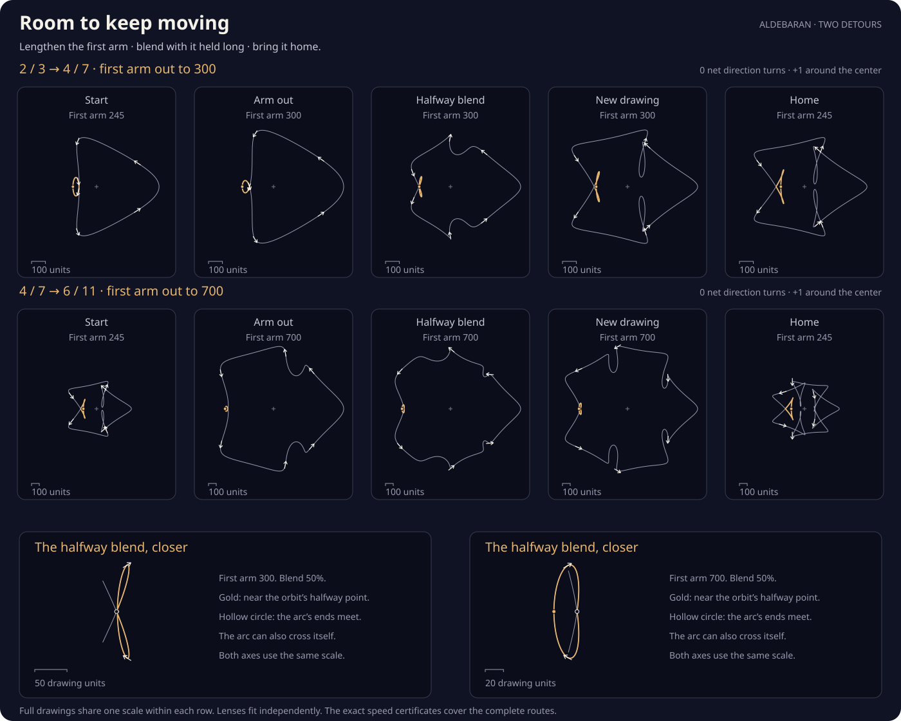

Room to keep moving
A straight blend between two drawings can bring the tracing point to a stop. Try a detour: lengthen the first arm, change the drawing, then bring the arm home. The little folds need a closer look. Every intermediate drawing keeps its tracing point moving around the orbit.
First arm at 300. Halfway between the two drawings.
0 direction’s net turns
+1 around the center
First arm

What changes on the three legs?
The sketchbook adds three rotating arms. Their lengths start at 245, 140, 65; their rhythms are 1, m, −n. The last arm turns backwards. On the first leg, only the first arm grows. The other lengths and all rhythms stay fixed.
On the middle leg, match points at the same orbit time on the two drawings and blend their positions. The first arm stays long. The rhythms remain integers: the two forward motions fade from one to the other, as do the two backward motions. Every intermediate drawing closes after a full orbit.
On the last leg, the new rhythms stay in place while the first arm returns to 245. Both joints join at exactly the same complete drawing. The round lengths 300 and 700 are convenient choices; they are not claimed to be the shortest possible detours.
What happens to the little folds?
The gold arc changes its size and folds as you follow the detour. The lens magnifies it independently of the full drawing, so watch the scale bars: an arc filling the lens may occupy only a few units in the original picture. The lens shows the part around halfway through the orbit, between its nearest reflected visits to the horizontal-axis crossing, with a little context on either side.
This arc need not be one simple loop. Several moving branches can meet or separate while each still has a direction. The hollow circle follows the arc’s two ends; other crossings can appear inside it. A short polynomial certificate proves that the lens’s choice of axis crossing stays unique and continuous on both detours.
Every intermediate tracing velocity is nonzero. Over each complete orbit, the direction’s left and right turns cancel, giving 0. The drawing still winds +1 around the center. Other crossings can change along the way; this is a guarantee about avoiding stationary points, not preserving every region.
The earlier two-route study compares a direct blend with another detour. Here all motions are finite sums of circles, including in the middle leg.
Using the controls and checking the claim
Nothing animates. Move the slider or choose one of the five stops to change the still drawing. Changing the pair keeps your place along the three-leg route. Arrow keys move by 1% of one leg; Shift makes the step 0.1%. Page Up and Page Down move by 10% of a leg. Home and End visit the original drawings.
An exact rational certificate covers every orbit time and every position on all six legs. It proves speed greater than one drawing unit per radian throughout. The pictures and the lens crossing use numerical approximations; the proof is independent of their pixels.